← Historical Perspective on Computing
Introduction to IT Basics
Information Technology (IT) is an integral part of the modern world, encompassing everything from the physical devices we use to the software and networks that connect us. Understanding the fundamental concepts of IT is essential for navigating today’s digital landscape, whether you're a professional in the field or an everyday user of technology. This section provides a foundational overview of key IT concepts, including hardware, software, networking, and the role of IT in modern organizations.
Fundamental IT Concepts
IT fundamentals provide the building blocks for understanding how modern computer systems operate and how various components work together to perform complex tasks. By exploring the basics of hardware, software, and networking, we gain a clearer picture of the technological infrastructure that supports everything from personal computing to large-scale enterprise solutions.
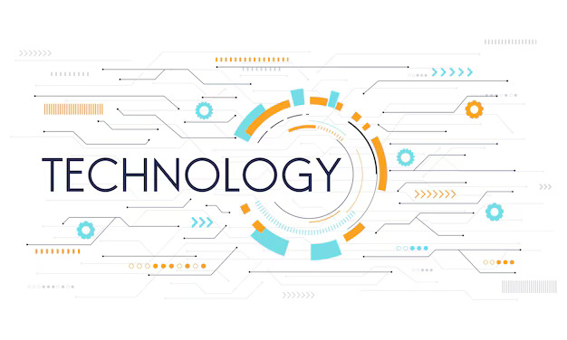
Hardware
Hardware forms the backbone of any computing system, comprising the physical components that make up a computer. These elements, such as input and output devices, storage units, processing units, and the motherboard, work in harmony to perform computational tasks. Each component plays a crucial role in the overall functionality of a computer system, enabling it to process data, store information, and interact with users. These components can be categorized into several key areas:
- Input Devices: Tools used to enter data into a computer. Examples include keyboards, mice, and scanners.

- Output Devices: Devices that convey information from a computer to the user. Common examples are monitors, printers, and speakers.

- Storage Devices: Hardware used to store data. This includes hard drives (HDDs), solid-state drives (SSDs), and external storage devices like USB flash drives.
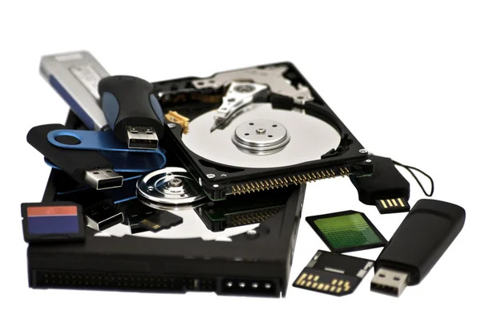
- Processing Units: The central processing unit (CPU) is often referred to as the brain of the computer, executing instructions and processing data.
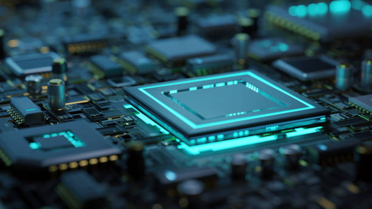
- Motherboard: The central hub that connects all computer components, allowing communication between them.
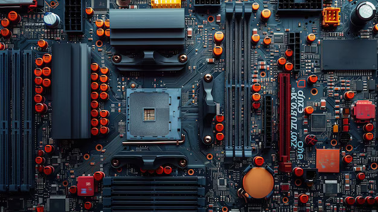
Software
While hardware constitutes the physical aspect of computing, software is the intangible component that directs hardware on what to do. Software ranges from system-level programs that manage hardware resources and provide essential services to applications that enable users to perform specific tasks. Understanding the difference between system software and application software is fundamental to grasping how computers operate and serve user needs. It can be divided into two main categories:
- System Software: This includes the operating system (OS), which manages hardware resources and provides a user interface. Examples are Microsoft Windows, macOS, and Linux.
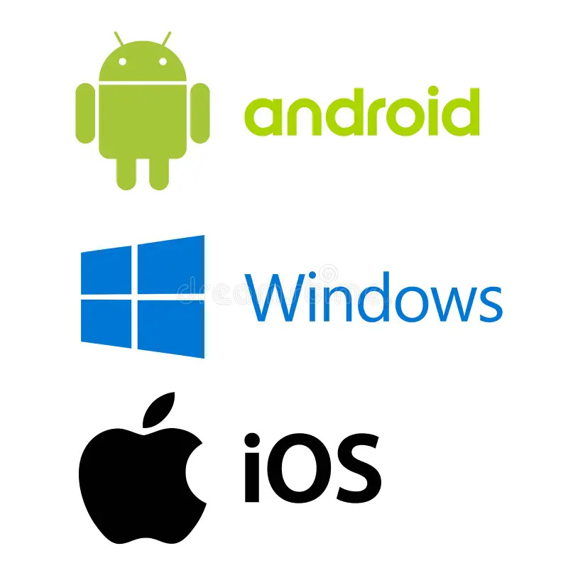
- Application Software: These are programs designed for end-users to perform specific tasks, such as word processing (e.g., Microsoft Word), spreadsheets (e.g., Microsoft Excel), and web browsers (e.g., Google Chrome).
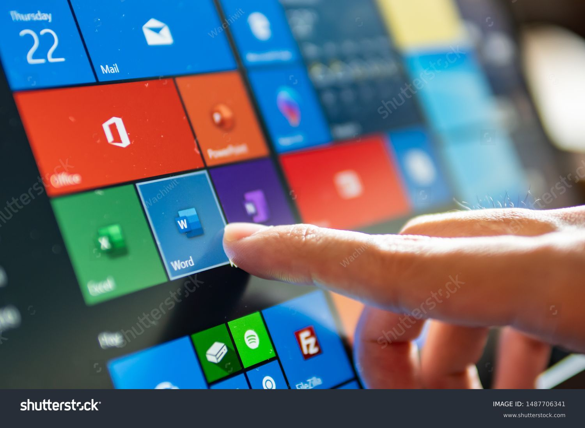
Networking
Networking is the practice of connecting computers and other devices to share resources and information efficiently. From local area networks (LANs) within a single building to wide area networks (WANs) that span countries, networking enables the vast interconnected world we live in today. This section explores the types of networks, the devices that support them, and the protocols that make seamless communication possible. Key concepts include:
- Network Types:
- Local Area Network (LAN): A network that connects computers within a limited area, such as a home or office.
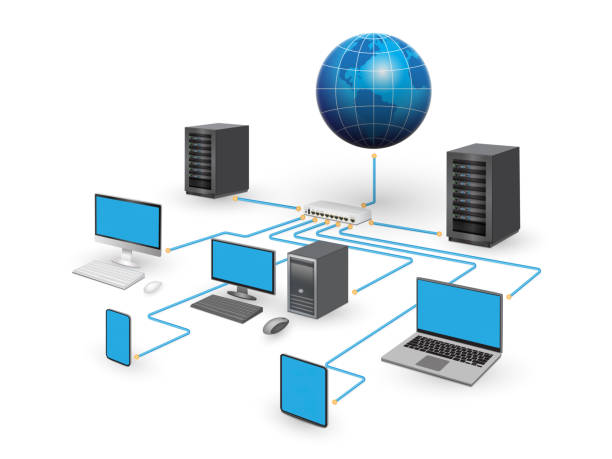
- Wide Area Network (WAN): A network that covers a broader geographic area, connecting multiple LANs, often using leased telecommunication lines.
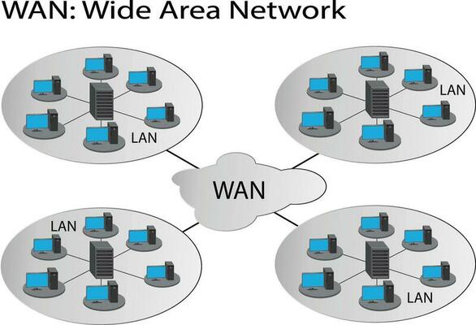
- Network Devices:
- Routers: Devices that forward data packets between networks, directing traffic on the Internet.
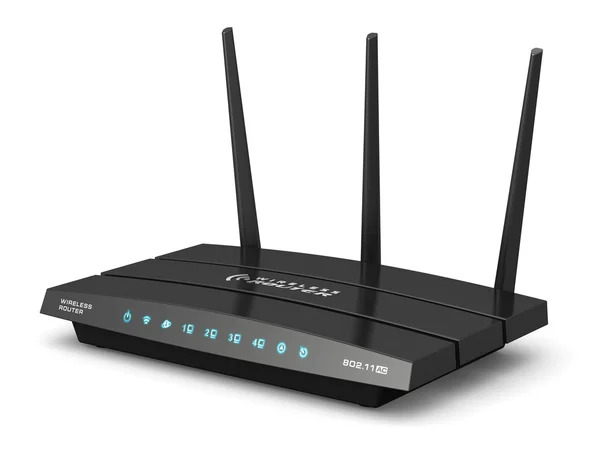
- Switches: Devices that connect multiple devices on a LAN, facilitating communication within the network.
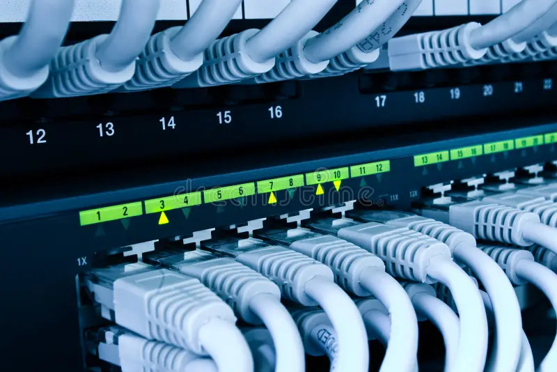
- Protocols: Rules that govern data communication over networks. The most common protocol is the Internet Protocol (IP), which enables devices to identify and communicate with each other.
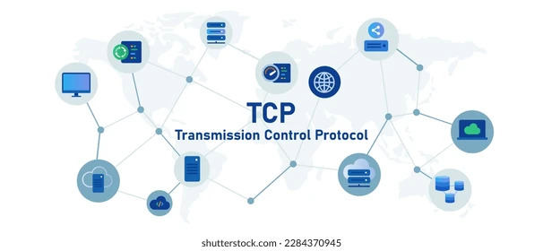
Role of IT in Modern Organizations
In today's digital age, IT plays a pivotal role in the functioning of modern organizations, driving operational efficiency, enhancing data management, and fostering communication and collaboration. From automating routine tasks to securing sensitive information, IT is fundamental to an organization's strategy and growth. This section highlights the various ways IT contributes to organizational success and how it continues to evolve as a critical resource for businesses. Its impact can be observed in several key areas:
- Operational Efficiency: IT systems automate routine tasks, streamline processes, and enhance productivity, allowing organizations to operate more efficiently.

- Data Management: IT enables organizations to collect, store, analyze, and manage vast amounts of data, facilitating informed decision-making and strategic planning.
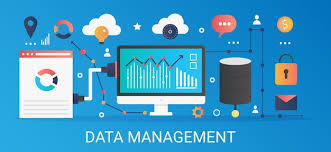
- Communication and Collaboration: IT tools such as email, video conferencing, and collaborative platforms (e.g., Slack, Microsoft Teams) enhance communication and teamwork among employees, regardless of location.
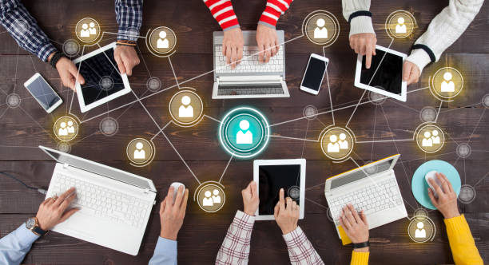
- Customer Engagement: Organizations leverage IT to improve customer service through online support, e-commerce platforms, and personalized marketing strategies.
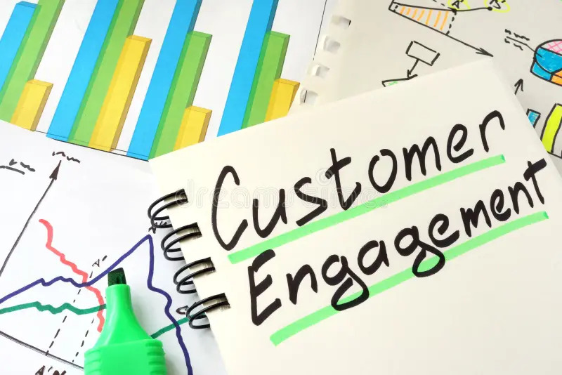
- Security: IT plays a crucial role in protecting sensitive data and systems from cyber threats through security measures such as firewalls, encryption, and access controls.

- Innovation and Growth: IT fosters innovation by enabling organizations to adopt new technologies, explore new business models, and enter new markets.
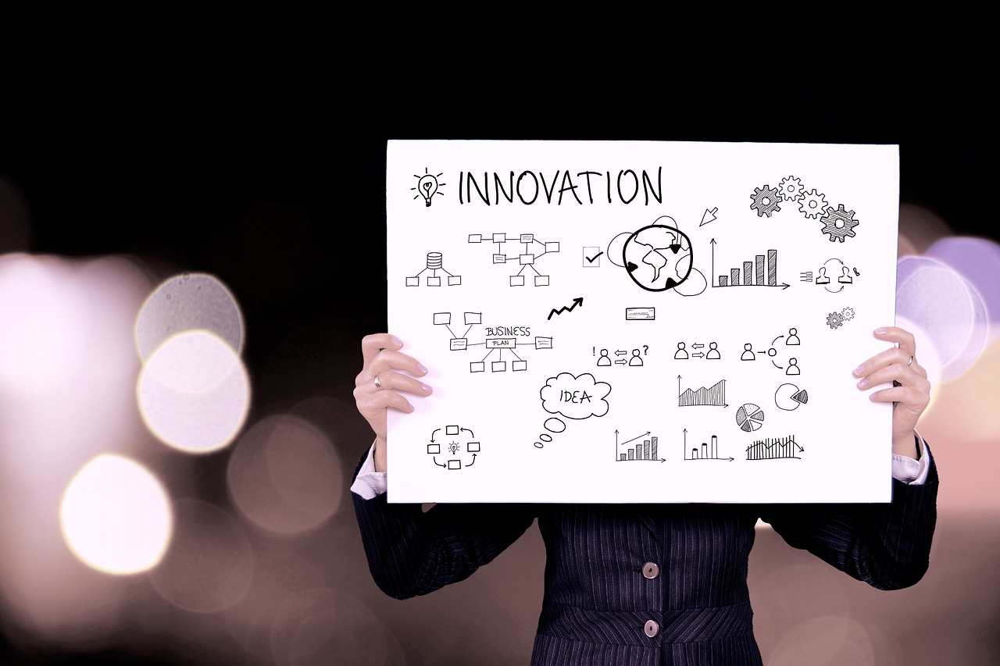